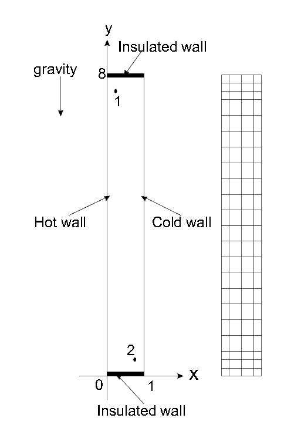

MIT Benchmark
Geometry and configuration

Geometry and coarse mesh
The geometry of the problem is very simple but leads nevertheless to complex multiscale phenomena. The velocity vector at the upper and bottom wall is zero which describes a non-slip condition. The left wall is heated while the right wall is cooled by a prescribed non-dimensional temperature of -0.5 and 0.5. Gravity is applied downwards. The top and bottom of the walls are insulated, which means that homogeneous Neumann boundary conditions for the temperature are set and hence no heat is going outside of the wall. The initial condition is the zero vector for all variables. Basically, relevant physical variables which are to be computed are:
- The x-velocity at point 1
- The temperature at point 1
- The Nusselt number along both sides of the wall in an integral valued function,
![\begin{displaymath} Nu(t)=\frac1H \int_0^H |\pp{\Theta}{x}|_{x=0, W}\,dx \end{displaymath}]( "\begin{displaymath} Nu(t)=\frac1H \int_0^H |\pp{\Theta}{x}|_{x=0, W}\,dx \end{displaymath}")
where  are the height and the width of the domain.
Comparison between all contributor's datas is made using the above computed datas.
are the height and the width of the domain.
Comparison between all contributor's datas is made using the above computed datas.
» Continue to Time Step and Mesh Information
» Return to the MIT benchmark page.